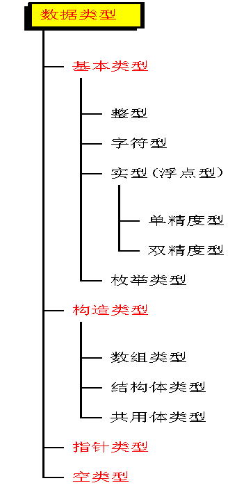

在第一章中，我们已经看到程序中使用的各种变量都应预先加以定义，即先定义，后使用。对变量的定义可以包括三个方面：
·数据类型
·存储类型
·作用域
在本章中，我们只介绍数据类型的说明。其它说明在以后各章中陆续介绍。所谓数据类型是按被定义变量的性质，表示形式，占据存储空间的多少，构造特点来划分的。在Ｃ语言中，数据类型可分为：基本数据类型，构造数据类型，指针类型，空类型四大类。

1. 基本数据类型：基本数据类型最主要的特点是，其值不可以再分解为其它类型。也就是说，基本数据类型是自我说明的。
2. 构造数据类型：构造数据类型是根据已定义的一个或多个数据类型用构造的方法来定义的。也就是说，一个构造类型的值可以分解成若干个“成员”或“元素”。每个“成员”都是一个基本数据类型或又是一个构造类型。在C语言中，构造类型有以下几种：
·数组类型
·结构体类型
·共用体（联合）类型
3. 指针类型：指针是一种特殊的，同时又是具有重要作用的数据类型。其值用来表示某个变量在内存储器中的地址。虽然指针变量的取值类似于整型量，但这是两个类型完全不同的量，因此不能混为一谈。
4. 空类型：在调用函数值时，通常应向调用者返回一个函数值。这个返回的函数值是具有一定的数据类型的，应在函数定义及函数说明中给以说明，例如在例题中给出的max函数定义中，函数头为：int max(int a,int b);其中“int ”类型说明符即表示该函数的返回值为整型量。又如在例题中，使用了库函数sin，由于系统规定其函数返回值为双精度浮点型，因此在赋值语句s=sin (x);中，s 也必须是双精度浮点型，以便与sin函数的返回值一致。所以在说明部分，把s说明为双精度浮点型。但是，也有一类函数，调用后并不需要向调用者返回函数值，这种函数可以定义为“空类型”。其类型说明符为void。在后面函数中还要详细介绍。
在本章中，我们先介绍基本数据类型中的整型、浮点型和字符型。其余类型在以后各章中陆续介绍。
对于基本数据类型量，按其取值是否可改变又分为常量和变量两种。在程序执行过程中，其值不发生改变的量称为常量，其值可变的量称为变量。它们可与数据类型结合起来分类。例如，可分为整型常量、整型变量、浮点常量、浮点变量、字符常量、字符变量、枚举常量、枚举变量。在程序中，常量是可以不经说明而直接引用的，而变量则必须先定义后使用。
整型量包括整型常量、整型变量。
在程序执行过程中，其值不发生改变的量称为常量。
●直接常量(字面常量)：
■整型常量：12、0、-3； ■实型常量：4.6、-1.23； ■字符常量：‘a’、‘b’。
●标识符：用来标识变量名、符号常量名、函数名、数组名、类型名、文件名的有效字符序列。
●符号常量：用标示符代表一个常量。在Ｃ语言中，可以用一个标识符来表示一个常量，称之为符号常量。
符号常量在使用之前必须先定义，其一般形式为：
#define 标识符 常量
其中#define也是一条预处理命令（预处理命令都以"#"开头），称为宏定义命令（在后面预处理程序中将进一步介绍）， 其功能是把该标识符定义为其后的常量值。一经定义，以后在程序中所有出现该标识符的地方均代之以该常量值。
●习惯上符号常量的标识符用大写字母，变量标识符用小写字母，以示区别。
#define PRICE 30
main()
{
int num,total;
num=10;
total=num* PRICE;
printf(“total=%d”,total);
}
■用标识符代表一个常量，称为符号常量。
■符号常量与变量不同，它的值在其作用域内不能改变，也不能再被赋值。
■使用符号常量的好处是：
◎含义清楚； ◎能做到“一改全改”。